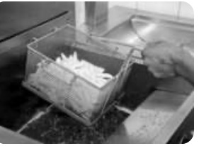
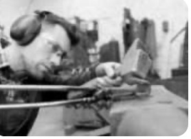
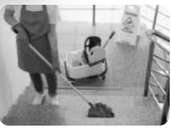

Concentrez-vous sur votre respiration...
Loïc, 1er jour de stage...
Loïc, élève en seconde Bac pro, commence sa première semaine de PFMP.
Il est reçu par son tuteur qui lui remet le livret d'accueil du stagiaire et lui explique les consignes de sécurité de son poste de travail. Il doit, entre autres, porter des chaussures de sécurité, mais Loïc les a oubliées dans le vestiaire du lycée.
Ne pouvant les récupérer avant le lendemain, il se dit que ce n'est pas grave et occupe son poste sans les chaussures de sécurité. En fin de journée, en manipulant une charge, celle-ci chute et lui écrase le pied.
| Question | Votre réponse |
|---|---|
| Quoi ? (Quel est le problème ?) | Pied écrasé par une charge |
| Qui ? (Qui est concerné ?) | Loïc |
| Où ? (Où cela a-t-il eu lieu ?) | En entreprise |
| Quand ? (Quand cela apparaît-il ?) | Lors du premier jour de PFMP |
| Comment ? (Comment cela survient-il ?) | Une charge a chuté sur le pied de Loïc |
| Pourquoi ? (Pourquoi cela se déclenche ?) | Loïc n'a pas respecté les consignes (pas de chaussures). |
Lors d'une activité de travail, une personne peut être exposée à un ou plusieurs dangers. Le danger est défini comme la cause capable de provoquer une lésion ou une atteinte à la santé (mentale ou physique) du salarié.
Il peut s'agir : d'un produit (ex: produit toxique), d'un équipement (ex: couteau tranchant), ou d'une situation (ex: travail en hauteur, posture).
Objectif : Repérer les dangers lors d'une activité de travail.


Replacer les termes : situation dangereuse, opérateur, dommage potentiel, danger.
| Situation | Danger | Situation Dangereuse | Dommage Potentiel |
|---|---|---|---|
|  Samir, cuisinier (friteuse) |
Huile chaude |
Réaliser une cuisson |
Brûlure |
|  Maxence, ferronnerie (bruit) |
Bruit |
Façonner des pièces |
Surdité |
|  Inès, entretien escalier |
Escalier |
Nettoyer l'escalier |
Fracture / Chute |
À partir de l'activité décrite à la question 4 (ou l'exemple de Samir), complétez le schéma :

Les consignes et fiches de sécurité informent sur les risques, les consignes à observer, le port des EPI et les mesures d'urgence.


Pour enrayer un début d'incendie : Position des extincteurs
Pour évacuer les locaux : Position des issues de secours
Les dangers : Lors d'une activité, on peut identifier des dangers. Un danger est une cause capable de provoquer une lésion.
Du danger au dommage : Quand l'opérateur est confronté à un danger, il est en situation dangereuse. Cela peut conduire à un dommage.
Risques professionnels : C'est la rencontre entre l'opérateur et le danger. Il existe 17 familles de risques.
Consignes : Elles informent sur les dangers, les EPI et les mesures d'urgence.
Complétez avec : Danger, Dommage potentiel, Fiche de sécurité, Opérateur, Situation dangereuse.
Situation de travail :
Instructions : , consignes incendie...